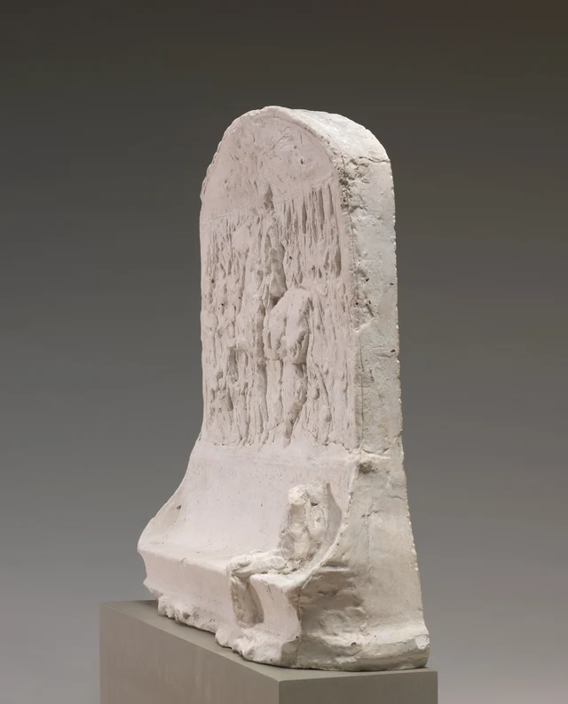

Johannes Vermeer · c. 1664
フェルメール《天秤を持つ女》
空の皿が二つ、卓上には宝飾品、背後には審判。もう一度見れば、この静けさには重みがある。
本文を読む →简 · 繁 · EN · 日本語 · FR · DE · ES · 한국어
NON DUBITO · 美術作品をじっくり見る
まず作品を見て、心を動かされる理由を考える。細部や素材、見る経験から始まる、一篇ずつ読める鑑賞の手引き。
Johannes Vermeer · c. 1664
空の皿が二つ、卓上には宝飾品、背後には審判。もう一度見れば、この静けさには重みがある。
本文を読む →简 · 繁 · EN · 日本語 · FR · DE · ES · 한국어

Pieter Bruegel the Elder · 1565
刈る人、食べる人、眠る人。黄金色の収穫には、いくつもの身体の時間がある。
本文を読む →简 · 繁 · EN · 日本語 · FR · DE · ES · 한국어

Jan van Eyck · c. 1434–1436
天使の言葉はこちらを向き、マリアの返事は逆さになっている。この世界は誰に向けて描かれたのか。
本文を読む →简 · 繁 · EN · 日本語 · FR · DE · ES · 한국어

Leonardo da Vinci · c. 1474–1478
表には顔、裏には賛辞。小さな板を返しながら、名前や称賛では置き換えられない一人を見る。
本文を読む →简 · 繁 · EN · 日本語 · FR · DE · ES · 한국어

Jean Honoré Fragonard · c. 1769
読んでいる姿は見えるのに、本の文章は読めない。黄色い袖、指、視線が伝える集中をたどる。
本文を読む →简 · 繁 · EN · 日本語 · FR · DE · ES · 한국어

Jacques Louis David · 1787
杯はまだ手渡されず、話も終わらない。決意、悲しみ、後世の記述が、一つの牢獄に居合わせる。
本文を読む →简 · 繁 · EN · 日本語 · FR · DE · ES · 한국어

J. M. W. Turner · 1835
月光は港を壮麗にし、火は石炭を積む人を照らす。明るいことと、よく見えることは同じだろうか。
本文を読む →简 · 繁 · EN · 日本語 · FR · DE · ES · 한국어

Mary Cassatt · 1893–1894
目の前をふさぐ紺色の背中と、子どもを支える腕。軽やかな舟遊びを、いくつもの身体が保っている。
本文を読む →简 · 繁 · EN · 日本語 · FR · DE · ES · 한국어


Rembrandt van Rijn · 1659
額には絵具が盛られ、目元には下の色が残り、髪には線が刻まれる。この顔を悲劇の挿絵にしてしまわずに見る。
本文を読む →简 · 繁 · EN · 日本語 · FR · DE · ES · 한국어

Paul Cézanne · c. 1893–1895
瓶、ガラス、果物と名づけたあと、もう一度見る。同じ色は、異なる素材のあいだで何をしているのか。
本文を読む →简 · 繁 · EN · 日本語 · FR · DE · ES · 한국어

Camille Pissarro · 1897
通りは遠くへ延び、馬車と人はそれぞれの拍子で進む。高所からの固定した眺めが、動き続ける街を描く。
本文を読む →简 · 繁 · EN · 日本語 · FR · DE · ES · 한국어

Nicolas Poussin · c. 1633–1634
明晰な構図は、強制と抵抗の違いを見せる。何が描かれているかを忘れずに、絵の秩序を味わえるだろうか。
本文を読む →简 · 繁 · EN · 日本語 · FR · DE · ES · 한국어

Peter Paul Rubens and Workshop · c. 1616
槍の柄、狼の口、馬の蹄が狭い場所に集まる。力が阻まれるところで、動きはいっそう激しくなる。
本文を読む →简 · 繁 · EN · 日本語 · FR · DE · ES · 한국어

John Constable · 1816
空は広がり、屋敷は遠のき、柵は手前にある。これほど自然に見える風景は、どう組み立てられているのか。
本文を読む →简 · 繁 · EN · 日本語 · FR · DE · ES · 한국어

Claude Monet · 1891
片側の輪郭は鋭く、もう片側は冬の朝に溶け込む。光は積みわらを周囲から分け、その境も越えていく。
本文を読む →简 · 繁 · EN · 日本語 · FR · DE · ES · 한국어

Vincent van Gogh · 1889
風景は目を遠い山へ誘い、盛り上がる絵具は画面へ引き戻す。一枚の絵に、二つの遠近が共存する。
本文を読む →简 · 繁 · EN · 日本語 · FR · DE · ES · 한국어

Paul Gauguin · 1891
桃色の屋根、深緑の樹冠、足元の青緑。色は滞在へと誘うが、そこにいる人々を理解したことにはならない。
本文を読む →简 · 繁 · EN · 日本語 · FR · DE · ES · 한국어

Henri Rousseau · 1908
葉は一枚ずつたどれるほど明瞭なのに、森は通り抜けにくい。植物が闘いを包み、見える範囲も決めている。
本文を読む →简 · 繁 · EN · 日本語 · FR · DE · ES · 한국어

Piet Mondrian · 1927
白は空の背景ではない。線が止まる場所、色が占める広さが、全体の均衡を変えていく。
本文を読む →简 · 繁 · EN · 日本語 · FR · DE · ES · 한국어

Edgar Degas · 1878–1881
踊っていなくても、その立ち方には踊りが残る。背後へ回ってから正面へ戻ると、隠れた手が見え方を変える。
本文を読む →简 · 繁 · EN · 日本語 · FR · DE · ES · 한국어

Auguste Rodin · Before 1900 / before 1914
頭も腕もない。それでも一歩は続く。胸腹部、腰、脚をたどり、組み合わされた身体がどう歩き出すかを見る。
本文を読む →简 · 繁 · EN · 日本語 · FR · DE · ES · 한국어

Antonio Canova · 1804–1806
殺戮は終わり、展示が始まる。英雄の掲げる手と、「勝利」の一語では片づかないメドゥーサの顔を見る。
本文を読む →简 · 繁 · EN · 日本語 · FR · DE · ES · 한국어

Circle of Andrea Riccio · attribution debated · 1525–1550
掲げた灯は、像へも、その先へも目を向けさせる。彫刻と日用品が、一つの手のひらで出会う。
本文を読む →简 · 繁 · EN · 日本語 · FR · DE · ES · 한국어

Unknown Greek sculptor · 3rd–2nd century BCE
翼はあるのに、手は力を抜いている。垂れた手首と眠る身体から、今は力を使わない神を見る。
本文を読む →简 · 繁 · EN · 日本語 · FR · DE · ES · 한국어

Unknown sculptor · Anatolia · c. 280–290
怪物は上へうねり、人の身体は口の中へ消える。飲み込む一瞬に、危険と曲線の美しさが同時に現れる。
本文を読む →简 · 繁 · EN · 日本語 · FR · DE · ES · 한국어

Unknown sculptor · Auvergne · c. 1175–1200
母は子の背後へ退いていない。その身体と両手が、支えを要する子を人々の前へ差し出す。
本文を読む →简 · 繁 · EN · 日本語 · FR · DE · ES · 한국어

Pietro Bernini and Gian Lorenzo Bernini · c. 1617
子どもと一緒に笑う前に、その手を見よう。気楽な笑顔と開かされた竜の口は、どう結びついているのか。
本文を読む →简 · 繁 · EN · 日本語 · FR · DE · ES · 한국어

Franz Xaver Messerschmidt · 1771–1783
目を固く閉じ、唇を結ぶ。それでも「困惑」だけではすべての皺を説明できない。顔の収縮と石の模様をたどる。
本文を読む →简 · 繁 · EN · 日本語 · FR · DE · ES · 한국어

Augustus Saint-Gaudens · 1883
上では軍隊が進み、下では小さな人が座る。記念碑の模型は、後にそれを見る人の居場所も試している。
本文を読む →简 · 繁 · EN · 日本語 · FR · DE · ES · 한국어